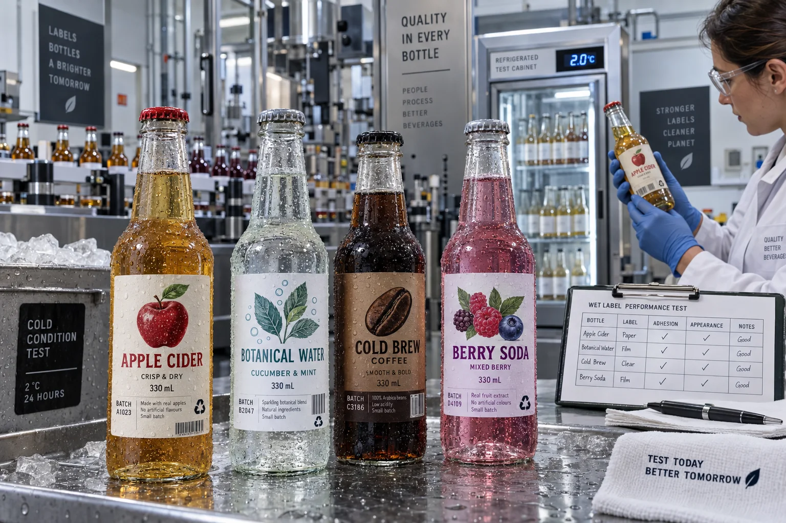

Short answer
For glass bottles exposed to condensation, start with a moisture-resistant face material and an adhesive proven on glass, then confirm whether labels are applied before or after the bottle becomes cold and wet. Application condition and service condition must be specified separately.
“Waterproof” is often used as if it answers everything. It usually describes the label face or the finished construction in use. It does not automatically mean the adhesive can push through a film of water during application. A label applied dry today may survive an ice bucket tomorrow; the same label applied onto a sweating bottle may slide before its bond forms.
Four glass-bottle conditions that look similar in a photo
| Condition | What the label faces | Specification priority |
|---|---|---|
| Room-temperature dry application | Clean dry glass, condensation later | Moisture resistance after bond builds |
| Cold dry application | Low surface temperature | Minimum application temperature and tack |
| Wet application | Visible moisture between adhesive and glass | Special construction and line trial |
| Ice-bucket immersion | Prolonged water, abrasion and temperature change | Face, ink, finish and adhesive as one system |
A composite cold-brew failure
This is a composite planning example. A cold-brew brand approves white film labels on empty room-temperature bottles. The sample looks perfect after refrigeration. During production, the bottles are filled cold, mist reaches the glass and labels are applied within minutes. Edges begin to move before packing.
The label passed a condensation test but never passed a wet-application test. My own earlier habit was to group those questions under “cold use.” That wording was too vague. Now we ask for bottle temperature at application, visible moisture, time between filling and labeling, and how much wipe-down or air-knife control exists.
Film, clear film and wet-strength paper
White BOPP film gives strong opacity and water resistance. It is a practical default for refrigerated juice, soda, cold brew and sauces. Clear film creates a no-label appearance on clean glass, but bubbles, fingerprints and trapped moisture become easier to see. White ink may be needed to keep graphics readable over the liquid.
Wet-strength paper can produce a tactile, premium look for beer, wine and craft beverages. It deserves a fair place in the comparison. Paper is not automatically wrong around moisture; ordinary paper without the right construction is. Long ice-bucket exposure, heavy rubbing and uncoated edges create a more demanding test than light condensation.
| Material direction | Where it wins | Watch for |
|---|---|---|
| White BOPP | Opacity, color and moisture resistance | Stiffness on small-radius curves |
| Clear BOPP | Product visibility and no-label look | White ink, bubbles and bottle cleanliness |
| Wet-strength paper | Tactile premium character | Edge wetting, scuffing and immersion duration |
| Metallized film | Reflective decoration and moisture resistance | Overly rigid construction and recycling goals |
Glass is smooth, but the bottle is not flat
A small bottle can place the label on a tight radius. A shoulder panel may curve in two directions. Thick film and square corners can lift even when the adhesive likes glass. Reduce the label height, add a corner radius or move the dieline to a more stable panel before asking for a stronger adhesive.
Returnable glass adds another decision: is the label intended to stay through use and then wash off in the bottle-cleaning process? A permanent cold-use label and a wash-off label solve different problems. Tell the supplier which life cycle matters.
Run a filled-bottle trial
- Use production glass with the normal surface treatment and cleaning process.
- Apply at the actual bottle and room temperature.
- Record whether the surface is dry, misted or visibly wet.
- Use the intended application pressure and line speed.
- Condition samples in refrigeration and at room-temperature recovery.
- Test wiping, carton contact and ice-bucket exposure where relevant.
- Inspect edges, print, whitening, sliding and adhesive residue.
Factory-side view
A beautiful clear label can be the least forgiving choice
Clear film makes the product part of the artwork. It also reveals every application bubble and water track. If the line cannot present consistently dry, clean bottles, an opaque label may produce a more premium result in real production.
The no-label look only works when the process behind it is almost invisible too.
What to include in the quote brief
- Bottle photos, diameter, label panel and filled sample if possible.
- Glass treatment, wash process and surface cleanliness.
- Bottle temperature and dryness at application.
- Refrigeration, condensation and immersion duration.
- Manual or automatic application and line speed.
- Required opacity, clear areas, white ink and finish.
- Single-use, returnable or wash-off life-cycle goal.
UPM's official beverage label overview explains why moisture, wash-off and bottle life cycle affect material choice. For deep cold-water exposure, also read Wine Label Materials for Ice Buckets and Waterproof Beverage Labels.
Frequently asked questions
What label material is best for glass bottles with condensation?
Film labels such as white or clear BOPP are common because they resist water, but wet-strength paper can work for the right aesthetic and exposure. Adhesive, finish and application conditions must also be matched.
Can labels be applied to wet glass bottles?
Only constructions designed and tested for that application condition should be considered. Many waterproof labels are intended to be applied to clean, dry bottles and resist moisture only after the bond develops.
Why do labels slide or wrinkle on refrigerated bottles?
Possible causes include moisture during application, low bottle temperature, contamination, insufficient pressure, an unsuitable adhesive or a label that bridges a curve. The failure pattern should be diagnosed on the actual line.
Are paper labels suitable for ice buckets?
Some wet-strength papers and adhesives are designed for wet environments, especially wine and premium beverages. They need finished-bottle testing because prolonged immersion is more demanding than brief condensation.
Related label guides
- Digital vs Flexographic Label Printing: Buyer Guide
- Variable Data Labels: QR Codes, Lots and Serial Numbers
- Peel-and-Reseal Labels for Food Packaging
Review the complete label construction
Send the package photos, material, finished label size, quantity by artwork, storage conditions and application method. We can review fit, material and production details before preparing a quote and digital proof.